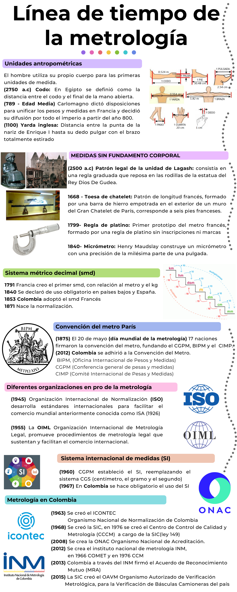

Introducción
Clase 1
Preguntas 1 clase
¿Qué es la metrología?
Tipos de metrología
¿Qué es calibración?
¿Qué es incertidumbre?
¿Qué es el error?
¿Qué es tolerancia?
¿Que es incertidumbre?
Qué es verificación metrológica?
qué normas conoces de metrología?
Estadística y metrología
Estadística
La ciencia estadística busca reducir el error, resultante de una estimación con su valor verdadero, con el objeto de tener valoraciones confiables como por ejemplo:
En economía predecir el precio futuro de una divisa o acción
Predecir la temperatura de un día
Metrología
En la vida cotidiana, nos interesan muchas medidas como:
El tiempo que debemos hervir un huevo
El límite máximo de velocidad
El peso del equipaje permitido en un avión
El número de galones con que se tanquea el carro
La metrología es la ciencia que se ocupa de mantener y aumentar la precisión de las mediciones, en cualquier campo, por ejemplo
Obtener una estimación fiable de niveles traza de contaminantes alimentarios como el mercurio en el pescado
En el campo de la medicina tener mediciones de la presión arterial para el diagnostico de enfermedades.
Tipos de metrología
Legal
Se relaciona con las actividades que se derivan de los requisitos legales que se aplican a la medición, las unidades de medida, los instrumentos de medida y los métodos de medida que se llevan a cabo por los organismos competentes, su objetivo es proteger a los consumidores para que reciban los bienes y servicios con las características que ofrecen o anuncian los diferentes fabricantes. Debe ser ejercida por los gobiernos y entre sus campos de acción están:
Verificación de pesas, balanzas y básculas
Verificación de cintas métricas.
Verificación de surtidores de combustible.
Verificación de productos pre-empacados.
Control de escapes de gas de automóviles.
Taxímetros.
Cilindros de gas.
Científica
Se encarga de la custodia, mantenimiento y trazabilidad de los patrones, así como la investigación y desarrollo de nuevas técnicas de medición, de acuerdo al estado del arte de la ciencia.
Dentro de sus funciones se encuentra:
Determinaciones de las constantes físicas fundamentales
Caracterísiticas de los fenómenos
Busca mejorar sistemas de medición para lograr un control cada vez más rápido y más confiable de la mano con el sistema de medidas internacionales SI
Técnica o industrial
Comprende todas las actividades metrológicas que necesita la industria para cumplir con sus tareas como:
La información sobre mediciones.
Las calibraciones.
La trazabilidad.
El servicio de calibración.
El aseguramiento de la calidad.
Cronología de la metrología
Para entender este gráfico y sus notaciones es necesario tener claro las siguientes siglas:
ABREVIATURAS DE LAS ORGANIZACIONES
| Abreviatura | Significado |
|---|---|
| ICONTEC | Instituto Colombiano de Normas Técnicas y Certificación |
| BIPM | Oficina Internacional de Pesos y Medidas |
| CGPM | Conferencia general de pesas y medidas |
| CIPM | Comité Internacional de Pesas y Medidas |
| IS | Sistema internacional de las medidas |
| ONAC | Organismo Nacional de Acreditación |
| ISO | Organización internacional de estandarización - International Standardisation Organisation) |

Institutos Metrológicos del mundo
INSTITUTOS NACIONALES ALREDEDOR DEL MUNDO
## Loading required package: maditr##
## Use magrittr pipe '%>%' to chain several operations:
## mtcars %>%
## let(mpg_hp = mpg/hp) %>%
## take(mean(mpg_hp), by = am)
## | Año_fund | fundacion | Pais | Nombre |
|---|---|---|---|
1842 
|
VNIIM | Rusia | Depósito de pesas y medidas de referencia D.I. Mendeleev All Russian Institute for Metrology |
1900
![]()
|
NPL | Inglaterra | National Physical Laboratory |
1916

|
NRC | Canadá | National Research Council |
|
1950
|
PTB | Alemania | Physikalisch Technische Bundesanstalt, . Physikalisch Technische Reichsanstalt (1887) |
|
1957
|
INTI | Argentina | Instituto Nacional de Tecnología Industrial |
|
1973
|
INMETRO | Brasil | Instituto Nacional de Metrología, Calidad y Tecnología |
1988

|
NIST | Estados unidos | National Institute of Standards and Technology, (National Bureau of Standards (1901)) |
|
1989 |
CEM | España | Centro Español de Metrología |
1992
![]()
|
CENAM | México | Centro Nacional de Metrología |
|
2012
|
INM | Colombia | Instituto Nacional de Metrología |
ORGANIZACIONES DE NORMAS O PATRONES ESCRITOS
| Año_fund | fundacion | Pais | Nombre |
|---|---|---|---|
|
1906
|
CEI | Suiza | Comisión Electrónica Internacional |
1916 
|
IUPAC | Suiza | Unión Internacional de Química Pura y Aplicada |
1922

|
IUPAP | París | Unión Internacional de Física Pura y Aplicada |
1945

|
ISO | Reino Unido | Organización Internacional de Normalización |
1952

|
IFCC | Londres | Federación Internacional de Química Clínica |
1997

|
JCGM | IBPM | Comité Conjunto para las Guías en Metrología (VIM GUM) |
Organizaciones regionales de metrología
| Año_fund | fundacion | Pais | Nombre |
|---|---|---|---|
1977 
|
APMP | Asia | Asia Pacific Metrology Programme |
|
1979
|
SIM | Suramérica | Sistema Interamericano de Metrología (SIM) |
|
1987
|
EURAMET | Unión Europea | European Association of National Metrology Inst |
1991 
|
COOMET | Eurasia | Euro-Asian Cooperation of National Metrological Institutions |
|
2006
|
AFRIMETS | Africa | Intra-Africa Metrology System |
|
2010
|
GULFMET | Paises arabes | Gulf Association for Metrology |
Normas metrológicas
| Abreviatura | Significado | Autor |
|---|---|---|
| VIM | Vocabulario internacional de metrología | JCGM |
| GUM | Guia para la expresión de la incertidumbre de las medidas | JCGM |
| Norma 10012 (2003) | Comprobación Metrológica Orienta los procesos y el equipo de medición utilizado para apoyar y demostrar el cumplimiento de requisitos metrológicos. | ISO |
| Norma 17025 (2006) | Establece los criterios para los laboratorios que desean demostrar su competencia técnica, que poseen un sistema de calidad efectivo y que son capaces de producir resultados técnicamente válidos | ISO |
Norma 10012
Confirmación metrológica
Conjunto de operaciones necesarias para asegurar que el equipo de medición cumple con los requisitos para su uso previsto
Verificación metrológica
Acto administrativo siguiente después de haber calibrado un equipo, en el que se comparan las características metrologicas de un equipo de medición y los requisitos metrológicos del cliente.

Calibración
Operación que bajo condiciones específicas establece una relación entre los valores y sus incertidumbres de medida asociadas(VIM).
Conjunto de operaciones por comparación entre un patrón y un instrumento de prueba para determinar el error máximo y su incertidumbre asociada, va documentado en un certificado de calibración.
Comparación documentada entre el dispositivo de medición que se va a calibrar y otro de referencia trazable (BIPM, Bureau International des Poids et Mesures, es decir, la oficina internacional de pesos y medidas).
Descalibración no existe
Una calibración puede expresarse mediante una declaración, una función de calibración, un diagrama de calibración, una curva de calibración o una tabla de calibración.
El estado de nuevo o usado no lo excluye de la calibración
Previo a una calibración el equipo debe estar en óptimas condiciones de funcionamiento.
Certificado de calibración
Documento que muestra las diferencias de medida entre el instrumento a calibrar (mensurando) y el patrón contra el que se contrasta.
Qué debe contener un certificado de calibración
Nombre del equipo
Resolución
Rango
Método de calibración
Incertidumbre del mensurando
Qué voy a medir?
Con que instrumento voy a medir
Diferencias entre las medidas que muestra el instrumento a calibrar (mensurando)
Patrones contrastados
Incertidumbre de medida de cada punto contrastado.

Definiciones
Metodos de medición
Descripción genérica de la secuencia lógica de operaciones utilizadas en una medición.
La norma internacional ISO/IEC 17025 identifica los métodos en términos de su origen, mientras que VIM los clasifica según el fenómeno.

Comprobación metrológica
Intermedio entre calibraciones
Trazabilidad metrológica (VIM)
Propiedad de un resultado de medida, que puede relacionarse con una referencia, mediante una cadena ininterrumpida y documentada de calibraciones, que contribuyen a la medición de la incertidumbre.
Mensurando: Cantidad destinada a la medida. (VIM)
Exactitud de medida
¿Que tan cercano esta al valor verdadero?
Proximidad entre un valor medido y un valor verdadero de un mensurando
Precisión de medida (VIM)
¿Qué tan cercanas están las medidas entre ellas?
Capacidad que tiene un equipo de replicar un valor, así sea el verdadero u otro diferente, se expresa mediante medidas de dispersión tales como la desviación típica, la varianza o el coeficiente de variación bajo las condiciones especificadas.
Proximidad entre los valores medidos obtenidos en mediciones repetidas de un mismo objeto bajo condiciones específicas de repetibilidad, de precisión intermedia, o de reproducibilidad.
## Linking to librsvg 2.48.8Relación entre precisión y exactitud

R y R son conocidas después de tomar las mediciones.